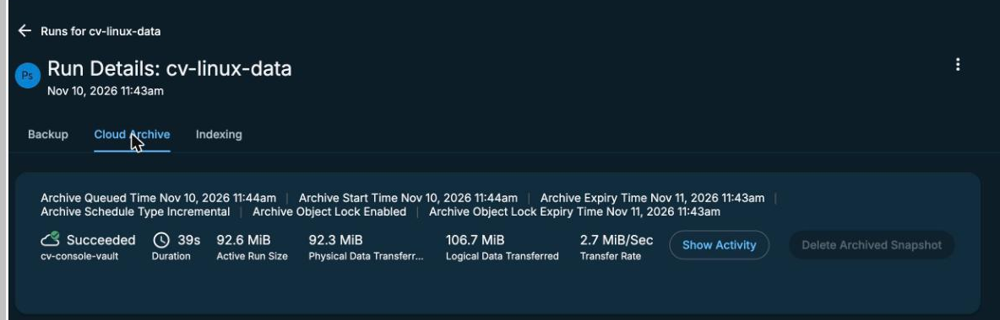

How long is the data really locked?
By the end of this unit you'll be able to find the lock length the Data Protect console shows, say how long the vault really holds the data, and explain why the two differ.
Northgate Freight is a made-up haulier. It archives three groups from Defender Data Protect to a Cyber Vault, with a policy that keeps each archive for 1 day. The auditor who checks Northgate's security controls wants to know how long the data can't be deleted.
Every number and screen in this unit comes from real runs in our lab. We ran the check twice: the first test was an earlier run, and the second test used a new vault.
Terms used. Metadata: data that describes other data.
Where a lock can be set
Data Protect writes several kinds of object into the vault, and each one gets its own lock date. Data Protect asks for the lock, and the vault enforces it.
Which key can read the lock date of an object in the vault?
Show the answer
The read key. In our tests it could read an object's lock and the write key couldn't, so we made the check in this unit with the read key.
Northgate's policy says: archive, retain for 1 day. Who decides the lock date of each object in the vault?
Show the answer
Data Protect. It locked data for 18 days in a vault created with a maximum retention of 3 days. A second test vault, created with a minimum of 2 days, locked a 1-day request for 1 day and a 5-day request for 5 days. The minimum and maximum didn't limit a lock the writer set.
What does the vault hold?
In the second test, Northgate ran its three groups at 11:43 and 11:44, each archived for 1 day. At 11:48 the backup admin read the lock of every object version in the vault with the read key. What do you think the locks said?
Object kind Count Lock lasts archive_metadata 3 ? cloud_chunk_file 35 ? metadata/snap_tree_objects 8 ? configs - ?
Until when are the 35 data chunks locked?
Show the answer
9 to 15 days.The chunks and the tree metadata were locked for 9 to 15 days. Only the three archive_metadata objects were locked for one day. configs had no lock.
Object kind Count Lock lasts archive_metadata 3 one day cloud_chunk_file 35 9 to 15 days metadata/snap_tree_objects 8 9 to 15 days configs - no lock
We'd done the same check in the first test, on an earlier vault. What did it find?
Show the answer
In the first test, 3,803 data chunks and 16 metadata objects were locked for 18 days, with a 1-day archive retention. That first test ended there. The second test, in a new vault, showed the same pattern.
What the console shows
These screens come from the Data Protect console in our lab. Click where you'd click. After two misses, the page marks the right place.

All three groups ran with an archive copy. Which icon tells you the archive copy succeeded?
Show where
Right. The cloud icon is the archive copy, and the icon beside it is the local backup. Open a run and its Cloud Archive tab to see the lock.

You opened the Cloud Archive tab of a run. Where does the console show the lock?
Show where
Right. Archive Object Lock Expiry Time says 11:43 the next day. The vault itself held the data chunks for up to 15 days, and the console doesn't show that.
The vault stays until the last lock ends
After the test, Northgate's backup admin wants to delete the vault. The archive retention was 1 day, so she expects no lock to remain. What happens?
What happens?
Show the answer
The vault holds the data until the last lock ends. The newest data lock in the vault runs for 15 days after the run, and IBM's page says a vault with locked objects can't be deleted. In our first test the delete call was accepted anyway, and the vault stayed in "deleting" for at least 50 minutes with its locked objects still readable. So plan for the vault to stay until the last lock ends.
Which number tells the auditor how long the data can't be deleted?
Show the answer
The lock dates in the vault. The vault enforces the lock, so its own dates are the record. In our lab the console and the policy both said 1 day while the vault held data for up to 15.
Watch for this. The console's one-day lock and the lock on the data chunks are different numbers, and they differed in both of our tests. Read the lock times from the vault if the number matters.
Three questions
A policy archives for 1 day. The console shows a lock expiry of one day later. How long were the data chunks locked in our lab?
Show the answer
For 9 to 15 days after the runs.
Which object kind was locked for only one day?
Show the answer
The three archive_metadata objects. The chunks and the tree metadata had the longer lock.
A vault has a 3-day maximum. Does that stop Data Protect locking data for longer?
Show the answer
No. We saw 18 days in a vault with a 3-day maximum, and a 5-day lock on a vault with the same maximum.
You know what the lock really is
The console showed one day, and the vault held the data chunks for 9 to 15 days. Read the lock from the vault with the read key, because the vault is what enforces it. Plan on the vault staying until the last lock ends. IBM says a vault with locked data can't be deleted, and in our first test a delete left the vault in "deleting".